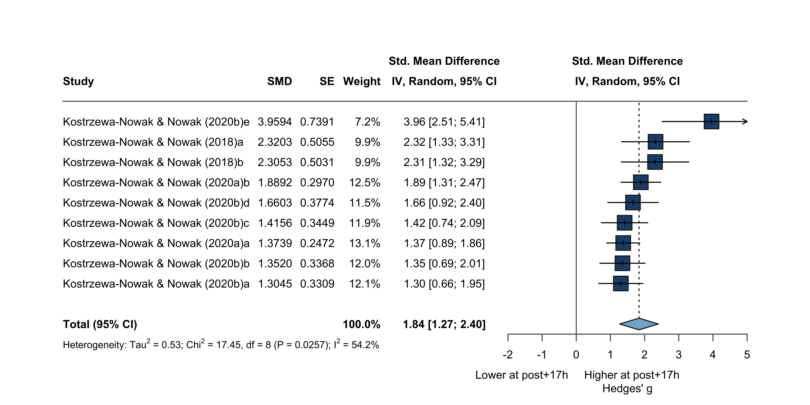

Code
fullData <- load_es("book/data/effect_size/Th1/pre_post17h/Th1_pre_post17h_r_050.csv")fullData <- load_es("book/data/effect_size/Th1/pre_post17h/Th1_pre_post17h_r_050.csv")As in the immediate window, Kostrzewa-Nowak et al. (2019) is removed before pooling. Outlier detection then flags Steensberg et al. (2001), which is both an outlier and an influential case and is therefore withdrawn from the downstream analyses (m2_1).
m2 <- meta::metagen(TE = g, seTE = SE_g, data = fullData, studlab = paste(Study),
random = TRUE, method.tau = "HE", fixed = FALSE,
hakn = TRUE, prediction = TRUE, sm = "SMD")
print(m2, overall = TRUE)Number of studies: k = 11
SMD 95% CI t p-value
Random effects model (HK) 1.8184 [ 0.8759; 2.7610] 4.30 0.0016
Prediction interval [-2.1567; 5.7935]
Quantifying heterogeneity (with 95% CIs):
tau^2 = 2.8848 [0.3797; 7.3113]; tau = 1.6985 [0.6162; 2.7039]
I^2 = 83.2% [71.3%; 90.1%]; H = 2.44 [1.87; 3.18]
Test of heterogeneity:
Q d.f. p-value
59.37 10 < 0.0001
Details of meta-analysis methods:
- Inverse variance method
- Hedges estimator for tau^2
- Q-Profile method for confidence interval of tau^2 and tau
- Calculation of I^2 based on Q
- Hartung-Knapp adjustment for random effects model (df = 10)
- Prediction interval based on t-distribution (df = 10)metafor::rma(yi = g, sei = SE_g, data = fullData, slab = paste(Study),
method = "HE", test = "knha")
Random-Effects Model (k = 11; tau^2 estimator: HE)
tau^2 (estimated amount of total heterogeneity): 2.8848 (SE = 2.0141)
tau (square root of estimated tau^2 value): 1.6985
I^2 (total heterogeneity / total variability): 95.32%
H^2 (total variability / sampling variability): 21.39
Test for Heterogeneity:
Q(df = 10) = 59.3676, p-val < .0001
Model Results:
estimate se tval df pval ci.lb ci.ub
1.8184 0.4230 4.2986 10 0.0016 0.8759 2.7610 **
---
Signif. codes: 0 '***' 0.001 '**' 0.01 '*' 0.05 '.' 0.1 ' ' 1Re-Fit: Removed Konstrezw-Nowak et al. (2019)
fullData <- drop_kostrzewa19(fullData)
m2 <- meta::metagen(g, seTE = SE_g, data = fullData, studlab = paste(Study),
random = TRUE, method.tau = "HE", hakn = TRUE,
prediction = TRUE, sm = "SMD", fixed = FALSE)
print(m2, overall = TRUE)Number of studies: k = 10
SMD 95% CI t p-value
Random effects model (HK) 1.6316 [ 0.8788; 2.3845] 4.90 0.0008
Prediction interval [-0.8087; 4.0720]
Quantifying heterogeneity (with 95% CIs):
tau^2 = 1.0428 [0.3167; 3.7647]; tau = 1.0212 [0.5628; 1.9403]
I^2 = 83.8% [71.7%; 90.7%]; H = 2.48 [1.88; 3.28]
Test of heterogeneity:
Q d.f. p-value
55.52 9 < 0.0001
Details of meta-analysis methods:
- Inverse variance method
- Hedges estimator for tau^2
- Q-Profile method for confidence interval of tau^2 and tau
- Calculation of I^2 based on Q
- Hartung-Knapp adjustment for random effects model (df = 9)
- Prediction interval based on t-distribution (df = 9)outlier <- metaoutliers(y = m2$TE, s2 = m2$seTE^2, model = "RE")
stdres <- outlier$std.resfullData |> select(Short_reference, g) |> mutate(std_res = outlier$std.res) |> nice_table()| Short_reference | g | std_res |
|---|---|---|
| Kostrzewa-Nowak & Nowak (2018)a | 2.320 | 0.785 |
| Kostrzewa-Nowak & Nowak (2018)b | 2.305 | 0.769 |
| Kostrzewa-Nowak & Nowak (2020a)a | 1.374 | -0.272 |
| Kostrzewa-Nowak & Nowak (2020a)b | 1.889 | 0.323 |
| Kostrzewa-Nowak & Nowak (2020b)a | 1.305 | -0.347 |
| Kostrzewa-Nowak & Nowak (2020b)b | 1.352 | -0.293 |
| Kostrzewa-Nowak & Nowak (2020b)c | 1.416 | -0.221 |
| Kostrzewa-Nowak & Nowak (2020b)d | 1.660 | 0.056 |
| Kostrzewa-Nowak & Nowak (2020b)e | 3.959 | 2.384 |
| Steensberg et al. (2001) | -0.454 | -4.085 |
plot_stdres(stdres)
One outcome has standardized residuals below -3 (Steensberg et al. (2001)).
funnel_ce(m2, ref = 1.8184, xlim = c(-1, 4), ylim = c(0.8, 0))
overall_metafor <- rma.mv(g, VE_g, tdist = TRUE, data = fullData)
df_betas <- dfbetas(overall_metafor)
fullData |> select(Short_reference, g) |> mutate(dfbetas = df_betas) |> nice_table()| Short_reference | g | dfbetas |
|---|---|---|
| Kostrzewa-Nowak & Nowak (2018)a | 2.320 | 0.42461320 |
| Kostrzewa-Nowak & Nowak (2018)b | 2.305 | 0.42202631 |
| Kostrzewa-Nowak & Nowak (2020a)a | 1.374 | -0.04511648 |
| Kostrzewa-Nowak & Nowak (2020a)b | 1.889 | 0.72827130 |
| Kostrzewa-Nowak & Nowak (2020b)a | 1.305 | -0.10227485 |
| Kostrzewa-Nowak & Nowak (2020b)b | 1.352 | -0.04589921 |
| Kostrzewa-Nowak & Nowak (2020b)c | 1.416 | 0.02298307 |
| Kostrzewa-Nowak & Nowak (2020b)d | 1.660 | 0.22848951 |
| Kostrzewa-Nowak & Nowak (2020b)e | 3.959 | 0.53549707 |
| Steensberg et al. (2001) | -0.454 | -2.29509141 |
Steensberg et al. (2001) is < -1 (influential) and also an outlier -> withdrawn.
# Withdraw the outlier/influential case and re-fit
fullData_bis <- fullData |> dplyr::filter(!Study == "Steensberg et al. (2001)")
m2_1 <- meta::metagen(g, seTE = SE_g, data = fullData_bis, studlab = paste(Study),
random = TRUE, method.tau = "HE", hakn = TRUE,
prediction = TRUE, sm = "SMD", fixed = FALSE)
print(m2_1, overall = TRUE)Number of studies: k = 9
SMD 95% CI t p-value
Random effects model (HK) 1.8367 [1.2690; 2.4043] 7.46 < 0.0001
Prediction interval [0.0315; 3.6418]
Quantifying heterogeneity (with 95% CIs):
tau^2 = 0.5349 [0.0000; 2.2412]; tau = 0.7314 [0.0000; 1.4971]
I^2 = 54.2% [2.8%; 78.4%]; H = 1.48 [1.01; 2.15]
Test of heterogeneity:
Q d.f. p-value
17.45 8 0.0257
Details of meta-analysis methods:
- Inverse variance method
- Hedges estimator for tau^2
- Q-Profile method for confidence interval of tau^2 and tau
- Calculation of I^2 based on Q
- Hartung-Knapp adjustment for random effects model (df = 8)
- Prediction interval based on t-distribution (df = 8)funnel_ce(m2_1, ref = 1.84, xlim = c(-1, 4), ylim = c(0.8, 0))
forest_main(m2_1, xlim = c(-2, 5), left = "Lower at post+17h", right = "Higher at post+17h")
metabias(m2_1, method = "linreg")# Trim-and-fill
res <- metafor::rma(yi = g, vi = V_g, data = fullData_bis, method = "HE")
taf <- metafor::trimfill(res)
print(taf)
Estimated number of missing studies on the left side: 0 (SE = 1.9045)
Random-Effects Model (k = 9; tau^2 estimator: HE)
tau^2 (estimated amount of total heterogeneity): 0.5349 (SE = 0.3673)
tau (square root of estimated tau^2 value): 0.7314
I^2 (total heterogeneity / total variability): 80.24%
H^2 (total variability / sampling variability): 5.06
Test for Heterogeneity:
Q(df = 8) = 17.4510, p-val = 0.0257
Model Results:
estimate se zval pval ci.lb ci.ub
1.8367 0.2791 6.5818 <.0001 1.2897 2.3836 ***
---
Signif. codes: 0 '***' 0.001 '**' 0.01 '*' 0.05 '.' 0.1 ' ' 1m1mod <- update(m2_1, subgroup = RoB, print.subgroup.name = TRUE, fixed = FALSE)
print(m1mod, overall = FALSE)Number of studies: k = 9
Quantifying heterogeneity (with 95% CIs):
tau^2 = 0.5349 [0.0000; 2.2412]; tau = 0.7314 [0.0000; 1.4971]
I^2 = 54.2% [2.8%; 78.4%]; H = 1.48 [1.01; 2.15]
Test of heterogeneity:
Q d.f. p-value
17.45 8 0.0257
Results for subgroups (random effects model (HK)):
k SMD 95% CI tau^2 tau Q I^2
RoB = Moderate 2 2.3128 [ 2.2169; 2.4086] 0 0 0.00 0.0%
RoB = Serious 2 1.6052 [-1.6511; 4.8615] 0.0581 0.2410 1.78 43.8%
RoB = Low 5 1.8263 [ 0.5408; 3.1117] 1.0891 1.0436 11.76 66.0%
Test for subgroup differences (random effects model (HK)):
Q d.f. p-value
Between groups 8.72 2 0.0128
Details of meta-analysis methods:
- Inverse variance method
- Hedges estimator for tau^2
- Q-Profile method for confidence interval of tau^2 and tau
- Calculation of I^2 based on Q
- Hartung-Knapp adjustment for random effects model
- Prediction interval based on t-distributionNot significant results
forest_sub(m1mod, xlim = c(-2, 5), left = "Lower at post+17h", right = "Higher at post+17h")
Intensity: all retained arms share the same intensity, so no intensity subgroup analysis is performed.
m1mr <- metareg(m2_1, age); summary(m1mr)
Mixed-Effects Model (k = 9; tau^2 estimator: HE)
logLik deviance AIC BIC AICc
-9.3856 19.2634 24.7713 25.3629 29.5713
tau^2 (estimated amount of residual heterogeneity): 0.5156 (SE = 0.3831)
tau (square root of estimated tau^2 value): 0.7181
I^2 (residual heterogeneity / unaccounted variability): 79.71%
H^2 (unaccounted variability / sampling variability): 4.93
R^2 (amount of heterogeneity accounted for): 3.61%
Test for Residual Heterogeneity:
QE(df = 7) = 15.6877, p-val = 0.0281
Test of Moderators (coefficient 2):
F(df1 = 1, df2 = 7) = 1.0164, p-val = 0.3470
Model Results:
estimate se tval df pval ci.lb ci.ub
intrcpt 5.6926 3.8350 1.4844 7 0.1813 -3.3758 14.7609
age -0.2146 0.2129 -1.0082 7 0.3470 -0.7180 0.2888
---
Signif. codes: 0 '***' 0.001 '**' 0.01 '*' 0.05 '.' 0.1 ' ' 1Not significant
bubble_reg(m1mr, "age", "Age (years)")
m2mr <- metareg(m2_1, bmi); summary(m2mr)
Mixed-Effects Model (k = 9; tau^2 estimator: HE)
logLik deviance AIC BIC AICc
-9.3661 19.2242 24.7321 25.3238 29.5321
tau^2 (estimated amount of residual heterogeneity): 0.5147 (SE = 0.3872)
tau (square root of estimated tau^2 value): 0.7175
I^2 (residual heterogeneity / unaccounted variability): 78.61%
H^2 (unaccounted variability / sampling variability): 4.68
R^2 (amount of heterogeneity accounted for): 3.77%
Test for Residual Heterogeneity:
QE(df = 7) = 15.9237, p-val = 0.0258
Test of Moderators (coefficient 2):
F(df1 = 1, df2 = 7) = 1.0645, p-val = 0.3365
Model Results:
estimate se tval df pval ci.lb ci.ub
intrcpt -3.1460 4.8331 -0.6509 7 0.5359 -14.5743 8.2824
bmi 0.2366 0.2293 1.0317 7 0.3365 -0.3056 0.7787
---
Signif. codes: 0 '***' 0.001 '**' 0.01 '*' 0.05 '.' 0.1 ' ' 1Not significant results
bubble_reg(m2mr, "bmi", "BMI (kg/m²)")
m3mr <- metareg(m2_1, duration); summary(m3mr)
Random-Effects Model (k = 7; tau^2 estimator: HE)
logLik deviance AIC BIC AICc
-8.5222 15.9889 21.0443 20.9362 24.0443
tau^2 (estimated amount of total heterogeneity): 0.6770 (SE = 0.5235)
tau (square root of estimated tau^2 value): 0.8228
I^2 (total heterogeneity / total variability): 80.13%
H^2 (total variability / sampling variability): 5.03
Test for Heterogeneity:
Q(df = 6) = 15.4832, p-val = 0.0168
Model Results:
estimate se tval df pval ci.lb ci.ub
1.9274 0.3239 5.9501 6 0.0010 1.1348 2.7200 **
---
Signif. codes: 0 '***' 0.001 '**' 0.01 '*' 0.05 '.' 0.1 ' ' 1Not significant results
m4mr <- metareg(m2_1, dose); summary(m4mr)
Random-Effects Model (k = 7; tau^2 estimator: HE)
logLik deviance AIC BIC AICc
-8.5222 15.9889 21.0443 20.9362 24.0443
tau^2 (estimated amount of total heterogeneity): 0.6770 (SE = 0.5235)
tau (square root of estimated tau^2 value): 0.8228
I^2 (total heterogeneity / total variability): 80.13%
H^2 (total variability / sampling variability): 5.03
Test for Heterogeneity:
Q(df = 6) = 15.4832, p-val = 0.0168
Model Results:
estimate se tval df pval ci.lb ci.ub
1.9274 0.3239 5.9501 6 0.0010 1.1348 2.7200 **
---
Signif. codes: 0 '***' 0.001 '**' 0.01 '*' 0.05 '.' 0.1 ' ' 1Not significant results
m6mr <- metareg(m2_1, IFN); summary(m6mr)
Mixed-Effects Model (k = 7; tau^2 estimator: HE)
logLik deviance AIC BIC AICc
-8.6058 18.6411 23.2116 23.0493 31.2116
tau^2 (estimated amount of residual heterogeneity): 0.8890 (SE = 0.6816)
tau (square root of estimated tau^2 value): 0.9429
I^2 (residual heterogeneity / unaccounted variability): 87.53%
H^2 (unaccounted variability / sampling variability): 8.02
R^2 (amount of heterogeneity accounted for): 0.00%
Test for Residual Heterogeneity:
QE(df = 5) = 13.1061, p-val = 0.0224
Test of Moderators (coefficient 2):
F(df1 = 1, df2 = 5) = 0.0320, p-val = 0.8651
Model Results:
estimate se tval df pval ci.lb ci.ub
intrcpt 1.9455 1.1277 1.7252 5 0.1451 -0.9533 4.8442
IFN -0.0645 0.3608 -0.1788 5 0.8651 -0.9920 0.8630
---
Signif. codes: 0 '***' 0.001 '**' 0.01 '*' 0.05 '.' 0.1 ' ' 1Not significant results
m7mr <- metareg(m2_1, IL_4); summary(m7mr)
Mixed-Effects Model (k = 7; tau^2 estimator: HE)
logLik deviance AIC BIC AICc
-8.6353 18.7000 23.2706 23.1083 31.2706
tau^2 (estimated amount of residual heterogeneity): 0.9003 (SE = 0.6946)
tau (square root of estimated tau^2 value): 0.9488
I^2 (residual heterogeneity / unaccounted variability): 87.21%
H^2 (unaccounted variability / sampling variability): 7.82
R^2 (amount of heterogeneity accounted for): 0.00%
Test for Residual Heterogeneity:
QE(df = 5) = 13.3188, p-val = 0.0206
Test of Moderators (coefficient 2):
F(df1 = 1, df2 = 5) = 0.0105, p-val = 0.9225
Model Results:
estimate se tval df pval ci.lb ci.ub
intrcpt 1.7842 0.4532 3.9366 5 0.0110 0.6191 2.9494 *
IL_4 -0.0606 0.5927 -0.1023 5 0.9225 -1.5842 1.4629
---
Signif. codes: 0 '***' 0.001 '**' 0.01 '*' 0.05 '.' 0.1 ' ' 1Not significant results
m8mr <- metareg(m2_1, IL_6); summary(m8mr)
Mixed-Effects Model (k = 9; tau^2 estimator: HE)
logLik deviance AIC BIC AICc
-8.2134 16.9190 22.4269 23.0185 27.2269
tau^2 (estimated amount of residual heterogeneity): 0.3862 (SE = 0.3095)
tau (square root of estimated tau^2 value): 0.6214
I^2 (residual heterogeneity / unaccounted variability): 75.64%
H^2 (unaccounted variability / sampling variability): 4.10
R^2 (amount of heterogeneity accounted for): 27.80%
Test for Residual Heterogeneity:
QE(df = 7) = 12.0828, p-val = 0.0979
Test of Moderators (coefficient 2):
F(df1 = 1, df2 = 7) = 3.2234, p-val = 0.1157
Model Results:
estimate se tval df pval ci.lb ci.ub
intrcpt 1.4941 0.2761 5.4119 7 0.0010 0.8413 2.1469 ***
IL_6 0.1709 0.0952 1.7954 7 0.1157 -0.0542 0.3960
---
Signif. codes: 0 '***' 0.001 '**' 0.01 '*' 0.05 '.' 0.1 ' ' 1Not significant results
m9mr <- metareg(m2_1, IL_10); summary(m9mr)
Mixed-Effects Model (k = 9; tau^2 estimator: HE)
logLik deviance AIC BIC AICc
-10.1243 20.7407 26.2486 26.8403 31.0486
tau^2 (estimated amount of residual heterogeneity): 0.6430 (SE = 0.4456)
tau (square root of estimated tau^2 value): 0.8019
I^2 (residual heterogeneity / unaccounted variability): 83.76%
H^2 (unaccounted variability / sampling variability): 6.16
R^2 (amount of heterogeneity accounted for): 0.00%
Test for Residual Heterogeneity:
QE(df = 7) = 17.0898, p-val = 0.0168
Test of Moderators (coefficient 2):
F(df1 = 1, df2 = 7) = 0.0868, p-val = 0.7768
Model Results:
estimate se tval df pval ci.lb ci.ub
intrcpt 1.7784 0.3578 4.9701 7 0.0016 0.9323 2.6245 **
IL_10 0.0714 0.2424 0.2946 7 0.7768 -0.5017 0.6445
---
Signif. codes: 0 '***' 0.001 '**' 0.01 '*' 0.05 '.' 0.1 ' ' 1Not significant results
m10mr <- metareg(m2_1, IL_2); summary(m10mr)
Mixed-Effects Model (k = 7; tau^2 estimator: HE)
logLik deviance AIC BIC AICc
-8.6267 18.6829 23.2535 23.0912 31.2535
tau^2 (estimated amount of residual heterogeneity): 0.9041 (SE = 0.6941)
tau (square root of estimated tau^2 value): 0.9509
I^2 (residual heterogeneity / unaccounted variability): 87.75%
H^2 (unaccounted variability / sampling variability): 8.16
R^2 (amount of heterogeneity accounted for): 0.00%
Test for Residual Heterogeneity:
QE(df = 5) = 11.8338, p-val = 0.0371
Test of Moderators (coefficient 2):
F(df1 = 1, df2 = 5) = 0.0501, p-val = 0.8317
Model Results:
estimate se tval df pval ci.lb ci.ub
intrcpt 1.6362 0.6316 2.5905 5 0.0488 0.0126 3.2599 *
IL_2 0.0662 0.2956 0.2239 5 0.8317 -0.6937 0.8261
---
Signif. codes: 0 '***' 0.001 '**' 0.01 '*' 0.05 '.' 0.1 ' ' 1Not significant results
rma(yi = g, vi = V_g, mods = ~ IFN * IL_2, data = fullData_bis,
slab = paste(Study), method = "HE", test = "knha")
Mixed-Effects Model (k = 7; tau^2 estimator: HE)
tau^2 (estimated amount of residual heterogeneity): 1.4592 (SE = 1.3845)
tau (square root of estimated tau^2 value): 1.2080
I^2 (residual heterogeneity / unaccounted variability): 90.49%
H^2 (unaccounted variability / sampling variability): 10.52
R^2 (amount of heterogeneity accounted for): 0.00%
Test for Residual Heterogeneity:
QE(df = 3) = 11.4927, p-val = 0.0093
Test of Moderators (coefficients 2:4):
F(df1 = 3, df2 = 3) = 0.0705, p-val = 0.9719
Model Results:
estimate se tval df pval ci.lb ci.ub
intrcpt 1.7103 2.6663 0.6415 3 0.5669 -6.7751 10.1958
IFN -0.1372 0.8430 -0.1627 3 0.8811 -2.8200 2.5457
IL_2 0.5964 1.9677 0.3031 3 0.7816 -5.6658 6.8586
IFN:IL_2 -0.0966 0.4584 -0.2108 3 0.8466 -1.5554 1.3621
---
Signif. codes: 0 '***' 0.001 '**' 0.01 '*' 0.05 '.' 0.1 ' ' 1Not significant